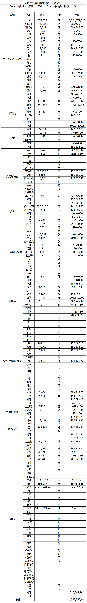

首页
一、行政区划
1.1陕甘宁边区县区乡统计表(1937年10月21日)
二、人口
2.1陕甘宁边区行政区域及人口统计一览表(1937年3月)
2.2陕甘宁边区各县区划人口统计表(1941年2月20日)
2.3葭县城关区一、二、三乡阶级构成(1943年)
三、就业与工资
3.1西北贸易公司农民银行工作人员统计表(1948年12月)
3.2光华印刷厂职员工资表（1948年）
四、价格
4.1延安市粮价与物价(1937-1943年)
4.2延安市逐月分类别物价指数(1941-1942年)
4.3延安市物价总指数表（1937-1945）
4.4根据地历年米价统计（1941年-1947年）
五、人民生活
5.1各分区每人存粮表（1947年）
六、财政
6.1财政概算收支比较表
6.2陕甘宁边区历年财政收支对照表
6.3陕甘宁边区历年财政岁出分类统计表
6.4陕甘宁边区历年财政岁入分类统计表
6.5岁入分类统计表
七、税收
7.1根据地全年税收报告表（1946年）
7.2根据地各月税收总结表（1946年）
7.3根据地全年税收报告表（1947年）
7.4根据地各月税收总结表（1947年）
八、自然灾害
九、对外经济贸易
9.1根据地各年进口货物统计表（1944年-1946年）
9.2根据地各年重要土产出口统计（1944一1946年）
9.3根据地主要物资出口统计（1944年-1946年）
9.4全年入境货物统计表（1946年）
十、农业
10.1陕甘宁边区农业统计（1936-1945年）
10.2陕甘宁边区各分区农作物种类及种植面积比例（1943年）
10.3陕甘宁边区各分区农作物种类及种植面积比例（1944年）
十一、工业
11.1民间纺织业发展统计(1942-1944年)
十二、商业
12.1延安市私营商户统计（1937-1944）
十三、运输业
十四、合作社
14.1 边区合作社发展概况统计(1937年—1944年3月)
14.2 边区各分区合作社发展情况统计(1944年)
14.3 分县市边区合作社社数统计（1944年）
14.4 分类别边区合作社社数统计（1944年）
14.5 关中各县合作社概况统计(1943年—1944年7月)
14.6 关中各县合作社概况统计（1944年后季到1945年7月）
14.7 分社别绥德分区各县合作社数统计(1944年)
14.8 延川县合作社经营报表（1943年上半年）
14.9 边区消费合作社发展概况统计（1937—1942）
14.10 分区县边区消费合作社概况
14.11 直属市县各消费合作社业务概况统计(1940年-1941年)
14.12 边区优秀消费合作社业务概况举例(1941年)
14.13 合作社供给群众农具、收买主要土产举例(1943年)
14.14 合作社帮助群众婚丧及移难民举例(1943年)
14.15 边区手工业生产合作社发展概况统计（1939-1941）
14.16 生产合作社社员股金表(1938年)
14.17 主要手工业生产合作社生产概况(1943年)
14.18 主要手工业生产合作社生产概况(1945年7月)
14.19 “中国工合”延安事务所之边区合作社历年发展的概况表
14.20 延安事务所贷出资金统计(1940年)
14.21 分县市人民纺织生产合作社统计(1939年上半年)
14.22 边区纺织工业合作社统计(1939年)
14.23 米脂民办纺织生产合作社成品种类列表(1943年)
14.24 各分区边区运输合作社概况统计(1944年)
14.25 分区域延安市运输合作社(队)概况统计(1943年)
14.26 延安县“请会” “随会”情况调查统计
14.27 延安县姚店19个“请会”成分用途调查统计
14.28 综合性合作社(南区式合作社)分布统计(1943年)
14.29 延安县南区合作社及其分社业务状况统计(1943年)
14.30 延安县南区合作社及其分社生产业务状况统计(1943年)
14.31 延安南区合作社新合工厂合伙分红制度（1943年3月23日）
14.32 延安大学员生工业合作社统计(1944年1-3月)
十五、金融业
15.1 边币发行额统计表（1940年12月-1944年2月）
十六、公共管理
16.1 根据地违禁走私统计表（1945年1月-10月）
十七、其他
17.1 陕甘宁边区气候统计（1940-1945年）
参考文献
联系我们
